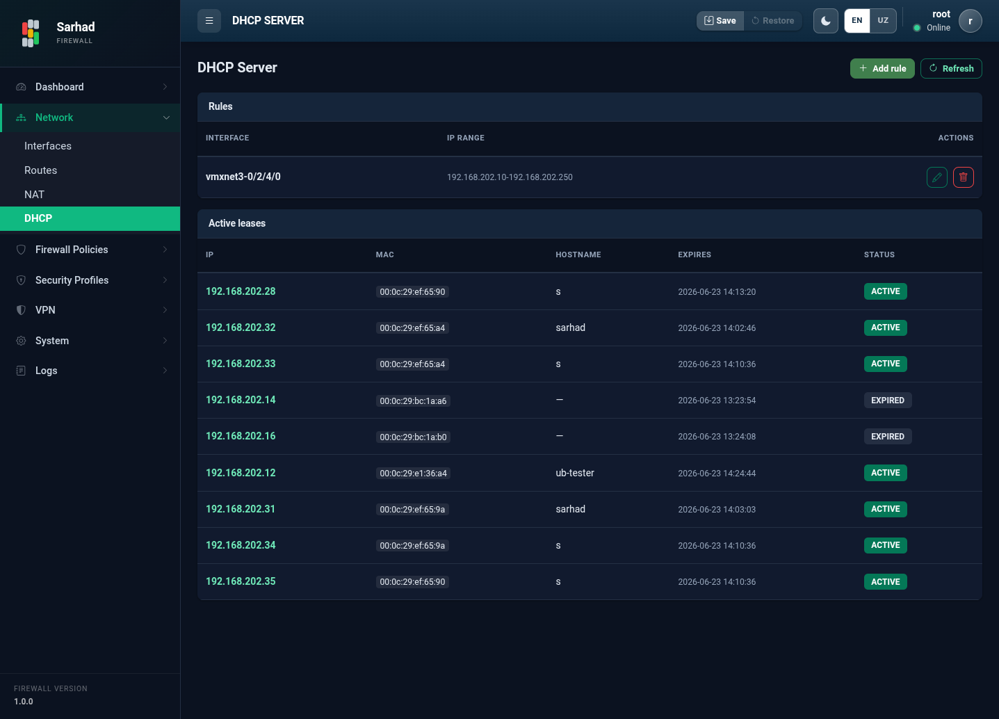

4. DHCP server
DHCP (Dynamic Host Configuration Protocol) tarmoqdagi qurilmalarga IP
manzillarni avtomatik tarqatish imkonini beradi. Bu bo’limga o’tish uchun chap
menyudan Network → DHCP Server bo’limini tanlang (/dhcp-server).
{kind=link}

4.1. DHCP qoidasi qo’shish
DHCP qoidasini yaratish juda sodda — interfeys tanlanadi va IP manzillar oralig’i kiritiladi. Tarmoq (subnet) va shlyuz (gateway) interfeysning o’z IP manzilidan avtomatik olinadi, ularni qo’lda kiritish shart emas.
Add rule tugmasini bosing.
Quyidagilarni belgilang:
Interface — DHCP xizmati ishlaydigan interfeysni tanlang.
IP range — tarqatiladigan manzillar oralig’i (masalan,
20.20.20.10-20.20.20.200).
Saqlash (Save) tugmasini bosing.

Qo’shilgan qoidalar Rules jadvalida interfeys va IP oralig’i bilan ko’rsatiladi. Qoidani keyinchalik tahrirlash yoki o’chirish mumkin.
4.2. Faol IP manzillar (Active leases)
Active leases bo’limida ayni paytda qurilmalarga berilgan IP manzillar ro’yxati ko’rsatiladi:
IP — qurilmaga berilgan manzil.
MAC — qurilmaning fizik manzili.
Hostname — qurilma nomi.
Expires — manzilning amal qilish muddati tugash vaqti.
Status — manzil holati.
Shu orqali tarmoqqa ulangan qurilmalarni kuzatib borish mumkin.
4.3. Interfeys oynasidan yoqish
DHCP serverni interfeysning sozlash oynasidan ham yoqish mumkin (qarang: Tarmoq interfeyslarini sozlash va boshqarish):
Interfeys qatorini ikki marta bosib, sozlash oynasini oching.
DHCP Server tugmachasini yoqing.
IP Range maydoniga manzillar oralig’ini kiriting — tarmoq va shlyuz interfeys IP manzilidan avtomatik aniqlanadi va oynada ko’rsatiladi.
Saqlash tugmasini bosing.